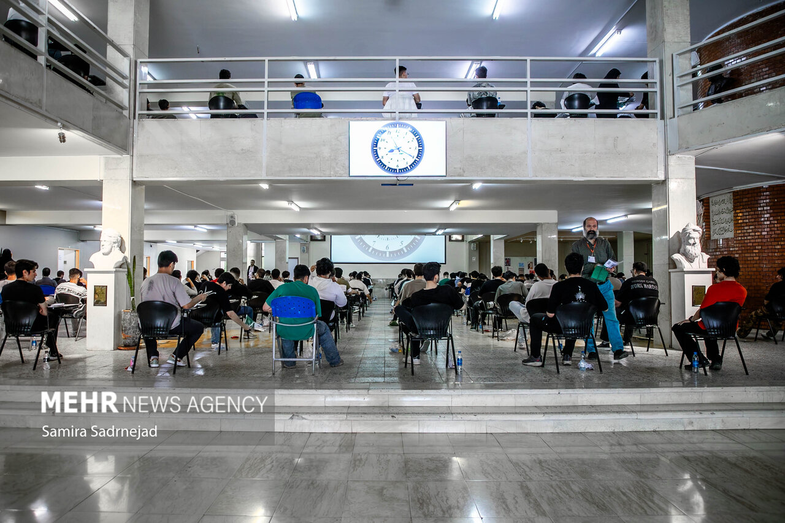

<!-- HMD-008 · deck source. Build: make decks  →  deck-fa.html + deck-en.html
     Every visible string is a pair <t-fa>…</t-fa><t-en>…</t-en>; text outside a pair is shown in both decks.
     Images are referenced relatively from media/ (see media/CREDITS.md). -->

<style>
.qreal{display:block;border:2px solid var(--amber);border-radius:6px;padding:20px 28px;font-size:30px;line-height:1.5;max-width:1664px}
.qreal b{display:inline-block;margin-inline-end:20px;vertical-align:middle;font-size:20px;line-height:1;padding:8px 12px;background:var(--amber);color:var(--night);border-radius:6px;white-space:nowrap}
.qreal s{color:var(--muted-night)}
.qreal em{font-style:normal;color:var(--amber-night);font-weight:700}
.qreal .ans{display:block;margin-top:8px}.qreal .ans>span{margin-inline-end:48px}
.withphoto{display:grid;grid-template-columns:620px 1fr;gap:56px;align-items:start;max-width:1664px}
.withphoto figure{margin:0}
.withphoto img{display:block;width:620px;height:auto;border-radius:4px}
.withphoto figcaption{font-size:19px;line-height:1.4;color:var(--muted);margin-top:10px}
.withphoto .steps{display:grid;grid-template-columns:1fr 1fr;gap:28px 32px}
table.t.slim td,table.t.slim th{padding:12px 26px}
</style>

<section class="cover">
<h1><t-fa>اگر جواب‌نامه <em>غلط</em> باشد، کدام AI می‌بازد؟</t-fa><t-en>If the answer key is <em>wrong</em>, which AI loses?</t-en></h1>
<p class="promise"><t-fa>یک امتحان با جواب‌نامهٔ عمداً خراب، و جواب‌نامه‌های واقعی‌ای که خراب بودند: ببین برنده چطور عوض می‌شود، و کلید را چطور ممیزی کنی.</t-fa><t-en>A quiz with a deliberately broken key, and real answer keys that were broken: watch the winner flip, and learn how to audit the key.</t-en></p>
</section>

<section class="frame night" id="beat-1" data-start="0">
<h1><t-fa>همان ۱۰۰ سؤال. مدلی که بیشتر بلد بود <em>باخت</em>.</t-fa><t-en>Same 100 questions. The model that knew more <em>lost</em>.</t-en></h1>
<div class="cols">
<div><span><t-fa>مدل K · بیشتر بلد است</t-fa><t-en>Model K · knows more</t-en></span><b><t-fa>۷۳ <small>از ۱۰۰</small></t-fa><t-en>73 <small>/ 100</small></t-en></b><p><t-fa>پایتخت استرالیا؟ ← کانبرا ✗</t-fa><t-en>Capital of Australia? → Canberra ✗</t-en></p></div>
<div class="hi"><span><t-fa>مدل P · باورهای رایج را تکرار می‌کند</t-fa><t-en>Model P · repeats popular beliefs</t-en></span><b><t-fa>۸۰ <small>از ۱۰۰</small></t-fa><t-en>80 <small>/ 100</small></t-en></b><p><t-fa>پایتخت استرالیا؟ ← سیدنی ✓</t-fa><t-en>Capital of Australia? → Sydney ✓</t-en></p></div>
</div>
<p class="tag"><b><t-fa>ساختگی</t-fa><t-en>ILLUSTRATIVE</t-en></b><t-fa>کلید نسخهٔ ۱ عمداً می‌گوید «سیدنی» · هیچ مدل واقعی صدا زده نشده</t-fa><t-en>Key v1 says "Sydney" on purpose · no real model was called</t-en></p>
<p class="qreal"><b><t-fa>واقعی · MMLU</t-fa><t-en>REAL · MMLU</t-en></b><t-fa>«ویروسی مثل آنفولانزا که ناگهان پیدا می‌شود و در دنیا پخش می‌شود، نامش چیست؟»<span class="ans"><span>کلید: <s>بومی</s> ✗</span><span>درست: <em>همه‌گیری</em> ✓</span></span></t-fa><t-en>"A virus such as influenza which emerges suddenly and spreads globally is called:"<span class="ans"><span>KEY: <s>Endemic</s> ✗</span><span>right: <em>Pandemic</em> ✓</span></span></t-en></p>
<footer><t-fa>K و P ساختگی · سؤال واقعی: ویروس‌شناسی MMLU · برچسب: MMLU-Redux · Gema و همکاران ۲۰۲۴ · CC BY 4.0 · تعریف همه‌گیری: CDC</t-fa><t-en>K and P ILLUSTRATIVE · real item: MMLU Virology, MMLU-Redux label (Gema et al. 2024, CC BY 4.0) · definition: CDC</t-en></footer>
<aside class="notes"><t-fa><b>بلدتر باخت</b><p>[GRAPHIC] دو کارت امتیاز ساختگی K ۷۳ و P ۸۰ و کارت سیدنی/کانبرا؛ برچسب ساختگی از ثانیهٔ اول. روی «یه سؤال واقعی هست» نوار کهربایی سؤال واقعی MMLU (بومی ✗ / همه‌گیری ✓). اختیاری: دو ثانیه شکل ۱ مقاله (media/beat01_…png) با اعتبار. کات روی «من محمدم…».</p><p>در یک جمله: در هر امتحانی، حتی امتحان‌های معروف هوش مصنوعی، خودِ جواب‌نامه هم ممکن است اشتباه داشته باشد.</p></t-fa><t-en><b>The one who knew more lost</b><p>[GRAPHIC] Two ILLUSTRATIVE score cards, K 73 and P 80, and the Sydney/Canberra card; ILLUSTRATIVE label from the first second. On "there is a real question" the amber strip with the real MMLU item (Endemic ✗ / Pandemic ✓). Optional: two seconds of the paper's Figure 1 (media/beat01_…png) with credit. Cut on "I'm Mohammad…".</p><p>In one line: in any exam, even famous AI exams, the answer key itself can be wrong.</p></t-en></aside>
</section>

<section class="frame paper" id="beat-2" data-start="45">
<p class="kicker"><t-fa>کلید اولیه</t-fa><t-en>The preliminary key</t-en></p>
<h1><t-fa>امتحانی که قبول دارد کلیدش ممکن است <em>غلط</em> باشد</t-fa><t-en>An exam that admits its key can be <em>wrong</em></t-en></h1>
<div class="withphoto">
<figure><figcaption><t-fa>کنکور ۱۴۰۴، تهران · عکس: سمیرا سادات صدرنژاد، مهر · CC BY 4.0</t-fa><t-en>Iran's national university entrance exam (Konkur) 2025, Tehran · Photo: Samira Sadat Sadrnejad, Mehr News Agency · CC BY 4.0</t-en></figcaption></figure>
<div class="steps">
<div><b><t-fa>۱ · کلید اولیه</t-fa><t-en>1 · Preliminary key</t-en></b><t-fa>چند روز بعد از آزمون منتشر می‌شود</t-fa><t-en>Published a few days after the exam</t-en></div>
<div><b><t-fa>۲ · اعتراض</t-fa><t-en>2 · Objections</t-en></b><t-fa>داوطلب‌ها سؤال‌های مورد اختلاف را اعلام می‌کنند</t-fa><t-en>Candidates flag disputed questions</t-en></div>
<div class="hi"><b><t-fa>۳ · کلید نهایی</t-fa><t-en>3 · Final key</t-en></b><t-fa>کلید اصلاح می‌شود یا سؤال حذف می‌شود</t-fa><t-en>A key is corrected or a question is removed</t-en></div>
<div><b><t-fa>جدول رتبه‌بندی AI؟</t-fa><t-en>An AI leaderboard?</t-en></b><t-fa>اغلب: یک جدول، بدون مهلت اعتراض</t-fa><t-en>Often: one table, no objection window</t-en></div>
</div>
</div>
<footer><t-fa>روند کلید کنکور: مهر (۱ شهریور ۱۴۰۵)، اعتمادآنلاین · عکس: مهر، CC BY 4.0</t-fa><t-en>Konkur key process: Mehr (23 Aug 2026), Etemad Online · photo: Mehr, CC BY 4.0</t-en></footer>
<aside class="notes"><t-fa><b>کلید اولیه</b><p>[B-ROLL CUE] عکس واقعی سالن کنکور ۱۴۰۴ تهران و بعد کیسه‌های شماره‌دار تلفن داوطلب‌ها (هر دو در media/، مهر، CC BY 4.0؛ اعتبار روی تصویر، واترمارک بماند). بعد چهار کارت مراحل روی دک.</p><p>در یک جمله: کنکور برای کلیدش مهلت اعتراض دارد؛ بسیاری از امتحان‌های هوش مصنوعی ندارند.</p></t-fa><t-en><b>The preliminary key</b><p>[B-ROLL CUE] Real photo of a 2025 Konkur exam hall in Tehran, then the candidates' numbered phone pouches (both in media/, Mehr, CC BY 4.0; credit on screen, keep the watermark). Then the four stage cards on the deck.</p><p>In one line: the Konkur has an objection window for its key; many AI exams do not.</p></t-en></aside>
</section>

<section class="frame paper" id="beat-3" data-start="102">
<p class="kicker"><t-fa>اول حدس بزن</t-fa><t-en>Guess first</t-en></p>
<h1><t-fa>MMLU: حدود <em>۶٫۴۹٪</em> سؤال‌ها خطا دارند</t-fa><t-en>MMLU: about <em>6.49%</em> of questions contain errors</t-en></h1>
<div class="bars tight">
<div class="hi"><span><t-fa>ویروس‌شناسی</t-fa><t-en>Virology</t-en></span><i style="--v:57"></i><span><t-fa>۵۷ از ۱۰۰</t-fa><t-en>57 / 100</t-en></span></div>
<div><span><t-fa>مغالطه‌های منطقی</t-fa><t-en>Logical fallacies</t-en></span><i style="--v:26"></i><span><t-fa>۲۶ از ۱۰۰</t-fa><t-en>26 / 100</t-en></span></div>
<div><span><t-fa>شیمی دانشگاهی</t-fa><t-en>College chemistry</t-en></span><i style="--v:25"></i><span><t-fa>۲۵ از ۱۰۰</t-fa><t-en>25 / 100</t-en></span></div>
<div><span><t-fa>جنسیت و سلامت جنسی</t-fa><t-en>Human sexuality</t-en></span><i style="--v:19"></i><span><t-fa>۱۹ از ۱۰۰</t-fa><t-en>19 / 100</t-en></span></div>
<div><span><t-fa>همهٔ ۵۷ موضوع</t-fa><t-en>All 57 subjects</t-en></span><i style="--v:6.49"></i><span><t-fa>۶٫۴۹٪</t-fa><t-en>6.49%</t-en></span></div>
</div>
<p class="tag"><b><t-fa>دادهٔ واقعی</t-fa><t-en>REAL DATA</t-en></b><t-fa>شمارش ما از دادهٔ MMLU-Redux 2.0 · ۱۰۰ سؤال تصادفی در هر موضوع · ویروس‌شناسی: ۳۳ کلید صاف غلط · ده مجموعه‌دادهٔ دیگر به گزارش Northcutt: از ۰٫۱۵٪ تا ۱۰٫۱۲٪، میانگین دست‌کم ۳٫۳٪</t-fa><t-en>Our count from the MMLU-Redux 2.0 data · 100 random questions per subject · Virology: 33 plainly wrong keys · 10 other datasets (Northcutt): from 0.15% to 10.12%, average at least 3.3%</t-en></p>
<footer><t-fa>برآورد ۶٫۴۹٪ با نمونه‌گیری لایه‌ای: Gema و همکاران ۲۰۲۴ · دادهٔ MMLU-Redux 2.0 · CC BY 4.0 · جدول ۱ مقالهٔ Northcutt و همکاران، NeurIPS 2021</t-fa><t-en>Gema et al. 2024 (6.49%, stratified sampling) · MMLU-Redux 2.0 data, CC BY 4.0 · Northcutt, Athalye, Mueller, NeurIPS 2021, Table 1</t-en></footer>
<aside class="notes"><t-fa><b>چقدر خطا؟</b><p>[UNEXPECTED STAT] اول فقط سؤال: چند درصد سؤال‌های MMLU خطا دارند؟ حدس بزن. سه ثانیه مکث. بعد ۶٫۴۹٪ و میله‌ها، ویروس‌شناسی کهربایی. «مثل همون بومی» پل به هوک. اختیاری: ضبط ترمینال mmlu_redux_audit.py بخش ۲.</p><p>در یک جمله: خطای جواب‌نامه در امتحان‌های معروف هم شمرده شده، نه فقط در آزمایش ما.</p></t-fa><t-en><b>How many errors?</b><p>[UNEXPECTED STAT] First only the question: what share of MMLU questions have errors? Guess. Pause three seconds. Then 6.49% and the bars, Virology in amber. "Like that endemic" bridges back to the hook. Optional: terminal recording of mmlu_redux_audit.py section 2.</p><p>In one line: answer-key errors have been counted in famous exams too, not only in our experiment.</p></t-en></aside>
</section>

<section class="frame paper" id="beat-4" data-start="166">
<p class="kicker"><t-fa>قانون اول</t-fa><t-en>The first rule</t-en></p>
<h1><t-fa>کلید غلط فقط از کسی نمره کم می‌کند که <em>درست</em> جواب داده.</t-fa><t-en>A wrong key only takes points from those who answered <em>right</em>.</t-en></h1>
<table class="t">
<tr><th></th><th><t-fa>کلید درست</t-fa><t-en>Key right</t-en></th><th><t-fa>کلید غلط</t-fa><t-en>Key wrong</t-en></th></tr>
<tr class="hi"><td><t-fa>مدل درست گفت</t-fa><t-en>Model right</t-en></td><td><t-fa>۱ امتیاز · حقش بود</t-fa><t-en>1 point · deserved</t-en></td><td><t-fa>۰ · به‌خاطر درست‌گفتن جریمه شد</t-fa><t-en>0 · punished for being right</t-en></td></tr>
<tr><td><t-fa>مدل غلط گفت</t-fa><t-en>Model wrong</t-en></td><td><t-fa>۰ · حقش بود</t-fa><t-en>0 · deserved</t-en></td><td><t-fa>۰ · چیزی از دست نداد</t-fa><t-en>0 · nothing to lose</t-en></td></tr>
</table>
<p class="tag"><b><t-fa>منطق، نه داده</t-fa><t-en>LOGIC · NOT DATA</t-en></b><t-fa>زیان مورد انتظار ≈ دقت × نرخ خطای کلید ← مدل قوی‌تر بیشتر می‌پردازد</t-fa><t-en>Expected loss ≈ accuracy × key error rate → the stronger model pays more</t-en></p>
<footer><t-fa>منطق نمره‌دهی · بدون داده</t-fa><t-en>Logic of scoring · no data</t-en></footer>
<aside class="notes"><t-fa><b>قانون اول</b><p>[GRAPHIC] جدول ۲×۲: ستون «کلید درست / کلید غلط»، ردیف «مدل درست گفت / مدل غلط گفت». خانهٔ «مدل درست + کلید غلط» کهربایی. سپس فرمول کوچک زیان مورد انتظار.</p><p>در یک جمله: کلید غلط فقط از جواب‌های درست نمره کم می‌کند؛ پس مدلِ بلدتر بیشتر ضرر می‌کند.</p></t-fa><t-en><b>The first rule</b><p>[GRAPHIC] A 2×2 table: columns "key right / key wrong", rows "model right / model wrong". The "model right + key wrong" cell is amber. Then the small expected-loss formula.</p><p>In one line: a wrong key only takes points from right answers, so the model that knows more loses more.</p></t-en></aside>
</section>

<section class="frame paper" id="beat-5" data-start="226">
<p class="kicker"><t-fa>بدتر از نویز</t-fa><t-en>Worse than noise</t-en></p>
<h1><t-fa>خطای تصادفی تار می‌کند. باور رایج <em>برنده</em> را انتخاب می‌کند.</t-fa><t-en>Random error blurs. A popular myth picks the <em>winner</em>.</t-en></h1>
<div class="cards">
<div><b><t-fa>غلط تایپی تصادفی</t-fa><t-en>Random typo</t-en></b><t-fa>کلید با جواب هیچ‌کس جور نیست. هر جواب درست یک امتیاز از دست می‌دهد.</t-fa><t-en>The key matches nobody. Every right answer loses a point.</t-en></div>
<div class="hi"><b><t-fa>باور رایج</t-fa><t-en>Popular myth</t-en></b><t-fa>کلید = سیدنی، استانبول، تورنتو. مدلی که همین باور را دارد نمره می‌گیرد.</t-fa><t-en>Key = Sydney, Istanbul, Toronto. The model that shares the myth scores.</t-en></div>
</div>
<p class="caption"><t-fa>اگر این‌جور باز کردن عددها به کارت می‌آید، هومودین هر هفته یکی‌اش را باز می‌کند.</t-fa><t-en>If this kind of unpacking of numbers is useful to you, Homodyne unpacks one every week.</t-en></p>
<p class="tag"><b><t-fa>ساختگی</t-fa><t-en>ILLUSTRATIVE</t-en></b><t-fa>کلید آموزشی · پایتخت‌های درست: کانبرا، آنکارا، اتاوا</t-fa><t-en>Teaching key · the right capitals: Canberra, Ankara, Ottawa</t-en></p>
<footer><t-fa>باورهای غلط رایج دربارهٔ پایتخت‌ها · کلید ساختگی</t-fa><t-en>Popular capital-city misconceptions · ILLUSTRATIVE key</t-en></footer>
<aside class="notes"><t-fa><b>بدتر از نویز</b><p>[CAMERA CHANGE] کات به نمای نزدیک راوی برای CTA؛ بعد روی دک دو کارت: غلط تایپی تصادفی و باور رایج؛ کارت دوم کهربایی. مثال‌ها: سیدنی/کانبرا، استانبول/آنکارا، تورنتو/اتاوا.</p><p>در یک جمله: وقتی کلید باوری غلط و رایج را تکرار کند، مدلی که همان باور را دارد می‌تواند برنده شود.</p></t-fa><t-en><b>Worse than noise</b><p>[CAMERA CHANGE] Cut to a close-up of the narrator for the CTA; then two cards on the deck: random typo and popular myth; the second card is amber. Examples: Sydney/Canberra, Istanbul/Ankara, Toronto/Ottawa.</p><p>In one line: when the key repeats a popular wrong belief, the model that holds the same belief can win.</p></t-en></aside>
</section>

<section class="frame paper" id="beat-6" data-start="276">
<p class="kicker"><t-fa>حدس بزن: کی جلوست؟</t-fa><t-en>Guess: who leads?</t-en></p>
<div class="code sm"><span class="c">$ python3 artifact/key_audit_demo.py        # excerpt</span>
   key v1 (8 myth errors)     K= 73  P= 80  leader=P
   key v2 (adjudicated)       K= 80  P= 76  leader=<span class="o">K</span>
2) SAME 8 ERRORS, BUT RANDOM TYPOS (key matches nobody)
   K=73  P=74
<span class="c">$ python3 tools/bluff_lab.py score artifact/key-v2.csv --condition plain   # excerpt</span>
    "K": ... "accuracy_all_prompts": 0.8,
    "P": ... "accuracy_all_prompts": 0.76,</div>
<p class="tag"><b><t-fa>ساختگی</t-fa><t-en>ILLUSTRATIVE</t-en></b><t-fa>مدل‌های خیالی · خطای کاشته‌شده · هیچ مدل واقعی صدا زده نشده</t-fa><t-en>Fictional models · planted errors · no real model was called</t-en></p>
<footer><t-fa>artifact/key_audit_demo.py · tools/bluff_lab.py · ساختگی</t-fa><t-en>artifact/key_audit_demo.py · tools/bluff_lab.py · ILLUSTRATIVE</t-en></footer>
<aside class="notes"><t-fa><b>اجرا کن</b><p>ضبط صفحه از اجرای واقعی در ترمینال؛ خروجی بخش ۱ و ۲. [SOUND EFFECT] یک «تیک» کوتاه وقتی ستون leader از P به K عوض می‌شود. بعد فرمان bluff_lab.py score برای key-v2.csv و فقط سطر accuracy_all_prompts. برچسب ساختگی در گوشهٔ قاب ثابت. روی «غلط تایپی» [GRAPHIC] کارت جدا: K ۷۳ و P ۷۴.</p><p>در یک جمله: در این امتحان ساختگی، هشت خطا در صد سؤال برای عوض‌شدن برنده کافی بود.</p></t-fa><t-en><b>Run it</b><p>Screen recording of the real run in the terminal; output of sections 1 and 2. [SOUND EFFECT] A short "tick" when the leader column flips from P to K. Then the bluff_lab.py score command for key-v2.csv, and only the accuracy_all_prompts line. ILLUSTRATIVE label fixed in the corner. On "random typos" [GRAPHIC] a separate card: K 73 and P 74.</p><p>In one line: in this ILLUSTRATIVE quiz, eight errors in a hundred questions were enough to flip the winner.</p></t-en></aside>
</section>

<section class="frame paper" id="beat-7" data-start="338">
<p class="kicker"><t-fa>شاهد واقعی · MMLU ویروس‌شناسی</t-fa><t-en>Real-world evidence · MMLU Virology</t-en></p>
<h1><t-fa>همان ۱۰ مدل · فقط سؤال‌های سالم: رتبهٔ ۸ ← <em>۱</em></t-fa><t-en>Same 10 models · only error-free questions: rank 8 → <em>1</em></t-en></h1>
<table class="t slim">
<tr><th><t-fa>مدل</t-fa><t-en>Model</t-en></th><th><t-fa>همهٔ سؤال‌ها · امتیاز (رتبه)</t-fa><t-en>All questions · score (rank)</t-en></th><th><t-fa>فقط سؤال‌های سالم</t-fa><t-en>Only error-free questions</t-en></th></tr>
<tr><td>Claude 3.5 Sonnet</td><td><t-fa>۰٫۶۰ (۱)</t-fa><t-en>0.60 (1)</t-en></td><td><t-fa>۰٫۹۱ (۵)</t-fa><t-en>0.91 (5)</t-en></td></tr>
<tr><td>GPT-4 Turbo</td><td><t-fa>۰٫۶۰ (۱)</t-fa><t-en>0.60 (1)</t-en></td><td><t-fa>۰٫۹۳ (۱)</t-fa><t-en>0.93 (1)</t-en></td></tr>
<tr class="hi"><td>Llama 3.1 405B</td><td><t-fa>۰٫۵۷ (۸)</t-fa><t-en>0.57 (8)</t-en></td><td><t-fa>۰٫۹۳ (۱)</t-fa><t-en>0.93 (1)</t-en></td></tr>
<tr><td>Gemini 1.5 Pro (001)</td><td><t-fa>۰٫۵۵ (۱۰)</t-fa><t-en>0.55 (10)</t-en></td><td><t-fa>۰٫۹۱ (۵)</t-fa><t-en>0.91 (5)</t-en></td></tr>
</table>
<p class="tag"><b><t-fa>واقعی</t-fa><t-en>REAL</t-en></b><t-fa>رتبه میان همان ده مدل جدول مقاله؛ هم‌امتیازها رتبهٔ بهتر را می‌گیرند · فقط یک موضوع، حدود ۱۰۰ سؤال · فاصله‌ها چندسؤالی</t-fa><t-en>Ranks among the paper's 10 table models; ties share the best rank · one subject only, about 100 questions · gaps of a few questions</t-en></p>
<footer><t-fa>جدول ۲ مقالهٔ Gema و همکاران · پیش‌بینی‌ها از HELM v1.3.0 · رتبه‌ها را ما میان ده مدل جدول شمردیم · CC BY 4.0</t-fa><t-en>Gema et al., Are We Done with MMLU?, Table 2 (HELM v1.3.0 predictions) · ranks counted by us within the table's 10 models · CC BY 4.0</t-en></footer>
<aside class="notes"><t-fa><b>شاهد واقعی</b><p>[UNEXPECTED STAT] جدول واقعی چهار ردیفی؛ فقط ردیف Llama کهربایی. در گفتار فقط «هشتم ← اول» و «Claude ← پنجم». بدون لوگوی شرکت‌ها. احتیاط را حتماً بگو: یک موضوع، حدود صد سؤال، فاصله‌های چندسؤالی.</p><p>در یک جمله: در یک موضوع واقعی، کنار گذاشتن سؤال‌های خراب هم نمره‌ها و هم ترتیب مدل‌ها را عوض کرد.</p></t-fa><t-en><b>Real-world evidence</b><p>[UNEXPECTED STAT] The real four-row table; only the Llama row in amber. In speech only "eighth → first" and "Claude → fifth". No company logos. Always say the caveat: one subject, about a hundred questions, gaps of a few questions.</p><p>In one line: in one real subject, setting aside the broken questions changed both the scores and the order of the models.</p></t-en></aside>
</section>

<section class="frame paper" id="beat-8" data-start="394">
<p class="kicker"><t-fa>چهار منبع خطا</t-fa><t-en>Four sources of error</t-en></p>
<h1><t-fa>جواب‌نامهٔ غلط از کجا می‌آید؟</t-fa><t-en>Where do wrong keys come from?</t-en></h1>
<div class="cards">
<div><b><t-fa>باور رایج · ساختگی</t-fa><t-en>Myth · ILLUSTRATIVE</t-en></b><t-fa>سیدنی به‌جای کانبرا</t-fa><t-en>Sydney instead of Canberra</t-en></div>
<div><b><t-fa>تاریخ</t-fa><t-en>Date</t-en></b><t-fa>آستانه ← نورسلطان (۲۰۱۹) ← آستانه (۲۰۲۲)</t-fa><t-en>Astana → Nur-Sultan (2019) → Astana (2022)</t-en></div>
<div><b><t-fa>کپی‌کردن · واقعی</t-fa><t-en>Copying · REAL</t-en></b><t-fa>ویروس‌شناسی: ۲۷ از ۳۳ کلید غلط از یک کتاب درسی</t-fa><t-en>Virology: 27 of 33 wrong keys traced to one textbook</t-en></div>
<div class="hi"><b><t-fa>ترجمه</t-fa><t-en>Translation</t-en></b><t-fa>سرنخ اضافه یا ابهام تازه</t-fa><t-en>An added clue or a new ambiguity</t-en></div>
</div>
<p class="tag"><t-fa>Global-MMLU: حدود ۲۸٪ سؤال‌ها به دانش فرهنگی وابسته‌اند · ۸۴٫۹٪ سؤال‌های جغرافیایی دربارهٔ آمریکای شمالی یا اروپا</t-fa><t-en>Global-MMLU: about 28% of questions depend on cultural knowledge · 84.9% of geography questions are about North America or Europe</t-en></p>
<footer><t-fa>منبع R06: Global-MMLU، Singh و همکاران ۲۰۲۴ · کپی: شمارش ما از ستون «منبع» MMLU-Redux؛ علت احتمالی به گفتهٔ Gema و همکاران · آستانه: ۲۰۱۹، ۲۰۲۲</t-fa><t-en>R06 Global-MMLU (Singh et al. 2024) · copying: our count from the MMLU-Redux "source" column; likely cause per Gema et al. · Astana: 2019, 2022</t-en></footer>
<aside class="notes"><t-fa><b>خطا از کجا می‌آید؟</b><p>[B-ROLL CUE] چهار کارت: باور رایج (ساختگی) · تاریخ آستانه · کپی‌کردن (واقعی: ۲۷ از ۳۳ کلید غلط ویروس‌شناسی به کتاب Human Virology می‌رسد) · ترجمه (کهربایی) با پانویس Global-MMLU. علت کپی «احتمال» است، نه قطعی.</p><p>در یک جمله: کلید معمولاً از چهار جا خراب می‌شود: باور رایج، تاریخ، کپی‌کردن و ترجمه.</p></t-fa><t-en><b>Where does the error come from?</b><p>[B-ROLL CUE] Four cards: myth (ILLUSTRATIVE) · the Astana date · copying (real: 27 of 33 Virology wrong keys trace to the Human Virology textbook) · translation (amber) with the Global-MMLU footnote. The copying cause is "likely", not certain.</p><p>In one line: a key usually goes wrong in four places: a popular belief, a date, copying and translation.</p></t-en></aside>
</section>

<section class="frame paper" id="beat-9" data-start="455">
<p class="kicker"><t-fa>هوک دوم: مخرج</t-fa><t-en>Second hook: the denominator</t-en></p>
<h1><t-fa>یک داده، سه عدد. <em>مخرج</em> تعیین می‌کند عدد چه معنایی دارد.</t-fa><t-en>Same data, three numbers. The <em>denominator</em> decides what it means.</t-en></h1>
<div class="bars">
<div class="hi"><span><t-fa>فقط ویروس‌شناسی</t-fa><t-en>Virology only</t-en></span><i style="--v:57"></i><span><t-fa>۵۷٪</t-fa><t-en>57%</t-en></span></div>
<div><span><t-fa>۵ موضوع بدتر</t-fa><t-en>5 worst subjects</t-en></span><i style="--v:29"></i><span><t-fa>۲۹٪</t-fa><t-en>29%</t-en></span></div>
<div><span><t-fa>همهٔ ۵۷ موضوع</t-fa><t-en>All 57 subjects</t-en></span><i style="--v:6.49"></i><span><t-fa>۶٫۴۹٪</t-fa><t-en>6.49%</t-en></span></div>
</div>
<p class="tag"><b><t-fa>دادهٔ واقعی · محاسبهٔ ما</t-fa><t-en>REAL DATA · OUR COMPUTATION</t-en></b><t-fa>۵۷ از ۱۰۰ · ۱۴۵ از ۵۰۰ · ۳۷۰ از ۵٬۷۰۰ · هیچ‌کدام دروغ نیست · بازهٔ اطمینان ۹۵٪ ویروس‌شناسی به روش Wilson: ۴۷٪ تا ۶۶٪</t-fa><t-en>57 of 100 · 145 of 500 · 370 of 5,700 · none of them is a lie · 95% Wilson interval for Virology: 47% to 66%</t-en></p>
<footer><t-fa>artifact/mmlu_redux_audit.py · بخش ۳ · دادهٔ MMLU-Redux 2.0، CC BY 4.0</t-fa><t-en>artifact/mmlu_redux_audit.py · section 3 · MMLU-Redux 2.0 data, CC BY 4.0</t-en></footer>
<aside class="notes"><t-fa><b>مخرج</b><p>[CAMERA CHANGE] کات به نمای مدیوم راوی برای re-hook. بعد ضبط ترمینال mmlu_redux_audit.py بخش ۳ و سه میله؛ پیش از میلهٔ ۲۹٪ مکث برای حدس.</p><p>در یک جمله: نرخ خطا بدون دانستن مخرج و روش انتخاب نمونه، معنای روشنی ندارد.</p></t-fa><t-en><b>The denominator</b><p>[CAMERA CHANGE] Cut to a medium shot of the narrator for the re-hook. Then the terminal recording of mmlu_redux_audit.py section 3 and the three bars; pause for the guess before the 29% bar.</p><p>In one line: an error rate has no clear meaning without the denominator and the way the sample was chosen.</p></t-en></aside>
</section>

<section class="frame paper" id="beat-10" data-start="520">
<p class="kicker"><t-fa>داوری: شاهد، نه رأی</t-fa><t-en>Adjudication: evidence, not votes</t-en></p>
<h1><t-fa>اول منبع. مطمئن نیستی؟ بنویس «<em>متخصص لازم است</em>».</t-fa><t-en>Source first. Not sure? Write "<em>expert needed</em>".</t-en></h1>
<div class="steps">
<div><b><t-fa>۱ · منبع اصلی</t-fa><t-en>1 · Original source</t-en></b><t-fa>همان سؤال و گزینه‌ها را در منبعش پیدا کن</t-fa><t-en>Find the same question and options in its source</t-en></div>
<div><b><t-fa>۲ · منبع معتبر</t-fa><t-en>2 · Trusted source</t-en></b><t-fa>کتاب درسی، سایت دولتی، سازمان بهداشت جهانی</t-fa><t-en>Textbook, government website, WHO</t-en></div>
<div class="hi"><b><t-fa>۳ · هنوز مطمئن نیستی</t-fa><t-en>3 · Still unsure</t-en></b><t-fa>برچسب «متخصص لازم است» · ۳۲ از ۵٬۷۰۰ · بدون حدس</t-fa><t-en>Label "expert" · 32 of 5,700 · no guessing</t-en></div>
</div>
<p class="tag"><b><t-fa>واقعی</t-fa><t-en>REAL</t-en></b><t-fa>توافق سه داور با معیار کاپای کوهن، ۱ یعنی کامل: ویروس‌شناسی ۰٫۶۷ · شیمی دانشگاهی ۰٫۹۲ · منطق صوری ۰٫۹۶</t-fa><t-en>Agreement of three annotators (Cohen's kappa, 1 = perfect): Virology 0.67 · College Chemistry 0.92 · Formal Logic 0.96</t-en></p>
<footer><t-fa>روند بازبینی MMLU-Redux: کارت داده و مقاله · جدول ۱ مقالهٔ Gema و همکاران · ۳۲ برچسب «متخصص»: شمارش ما</t-fa><t-en>MMLU-Redux annotation protocol (dataset card and paper) · Gema et al., Table 1 · 32 "expert": our count</t-en></footer>
<aside class="notes"><t-fa><b>داوری</b><p>[GRAPHIC] سه کارت روند واقعی MMLU-Redux؛ کارت سوم کهربایی. پانویس توافق داوران. بازگشت کوتاه به عکس «کلید نهایی» قاب ۲.</p><p>در یک جمله: جواب درست را منبع تعیین می‌کند، نه رأی؛ و «مطمئن نیستم» هم باید ثبت شود.</p></t-fa><t-en><b>Adjudication</b><p>[GRAPHIC] Three cards of the real MMLU-Redux protocol; the third is amber. Footnote with annotator agreement. A brief callback to the "final key" photo from beat 2.</p><p>In one line: the source decides the right answer, not a vote; and "I'm not sure" must be recorded too.</p></t-en></aside>
</section>

<section class="frame paper" id="beat-11" data-start="578">
<p class="kicker"><t-fa>پایلوت ما · و کلیدی که «تأییدشده» بود</t-fa><t-en>Our pilot · and a key that was "verified"</t-en></p>
<div class="cols">
<div><span><t-fa>ممیزی کلید پایلوت Bluff</t-fa><t-en>Bluff pilot key audit</t-en></span><b class="word"><t-fa>هنوز اجرا نشده</t-fa><t-en>Not run yet</t-en></b><p><t-fa>۶۰ پروندهٔ سؤال · نتیجهٔ واقعی جدا منتشر می‌شود</t-fa><t-en>60 question files · the real result will be published separately</t-en></p></div>
<div class="hi"><span>SWE-bench Verified · OpenAI</span><b><t-fa>۱٬۶۹۹ ← ۵۰۰</t-fa><t-en>1,699 → 500</t-en></b><p><t-fa>۲۰۲۴: ۹۳ برنامه‌نویس؛ ۶۱٫۱٪ نمونه‌ها تستی داشتند که ممکن بود راه‌حل درست را رد کند؛ ۶۸٫۳٪ کنار رفت، به گفتهٔ خودشان احتمالاً سخت‌گیرانه · ۲۰۲۶: دوباره ممیزی شد و OpenAI دیگر نمره‌اش را گزارش نمی‌کند (HMD-004)</t-fa><t-en>2024: 93 developers; 61.1% of samples had tests that may reject valid solutions; 68.3% filtered out, by their own account likely overzealous · 2026: re-audited, and OpenAI no longer reports it (HMD-004)</t-en></p></div>
</div>
<p class="tag"><b><t-fa>اجرا نشده</t-fa><t-en>NOT RUN YET</t-en></b><t-fa>عددهای K و P آموزشی بودند · در برنامه‌نویسی، تست‌ها همان کلید جواب‌نامه‌اند · ممیزی ۲۰۲۶ و دلیل‌هایش: قسمت «مدل اول جدول»</t-fa><t-en>The K and P numbers were teaching examples · in coding, the tests are the answer key · the 2026 audit and its reasons: the "top of the leaderboard" episode (HMD-004)</t-en></p>
<footer><t-fa>دو پست OpenAI: ۱۳ اوت ۲۰۲۴ و ۲۳ فوریهٔ ۲۰۲۶ · پایلوت Bluff: هنوز اجرا نشده</t-fa><t-en>OpenAI, Introducing SWE-bench Verified (13 Aug 2024) · Why we no longer evaluate SWE-bench Verified (23 Feb 2026) · Bluff pilot: not run yet</t-en></footer>
<aside class="notes"><t-fa><b>پایلوت ما</b><p>[B-ROLL CUE] کارت «هنوز اجرا نشده» برای ممیزی پایلوت. سپس کارت SWE-bench Verified با دو تاریخ. اختیاری: ضبط صفحهٔ پست ۲۰۲۴ OpenAI در مرورگر خودت. ۲۰۲۶ فقط یک جملهٔ یادآوری است؛ عدد ۵۹٫۴٪ را اینجا نگو (در HMD-004 آمده).</p><p>در یک جمله: حتی کلیدی که «تأییدشده» بود دوباره ممیزی لازم داشت؛ ممیزی پایلوت ما هنوز اجرا نشده و جدا گزارش می‌شود.</p></t-fa><t-en><b>Our pilot</b><p>[B-ROLL CUE] The "not run yet" card for the pilot audit. Then the SWE-bench Verified card with its two dates. Optional: screen-record the 2024 OpenAI post in your own browser. 2026 is a one-line callback only; do not say 59.4% here (HMD-004 covers it).</p><p>In one line: even a key that was "verified" needed another audit; our pilot audit has not been run yet and will be reported separately.</p></t-en></aside>
</section>

<section class="frame night" id="beat-12" data-start="651">
<p class="kicker"><t-fa>مرز ادعا</t-fa><t-en>Claim boundary</t-en></p>
<div class="boundary">
<div><b><t-fa>این قسمت نشان می‌دهد</t-fa><t-en>This shows</t-en></b><t-fa>کلید غلط فقط از جواب‌های درست نمره کم می‌کند. ممیزی‌های منتشرشده در بنچمارک‌های معروف خطای کلید پیدا کرده‌اند، و در یک موضوع واقعی کنار گذاشتن سؤال‌های خراب ترتیب مدل‌ها را عوض کرد.</t-fa><t-en>A wrong key only takes points from right answers. Published audits have found key errors in famous benchmarks, and in one real subject setting aside the broken questions changed the order of models.</t-en></div>
<div class="no"><b><t-fa>این قسمت نشان نمی‌دهد</t-fa><t-en>This does not show</t-en></b><t-fa>که جدول رتبه‌بندی خاصی امروز غلط است · امتحان K و P ساختگی بود · ۶٫۴۹٪ یک برآورد برای MMLU است، نه برای همهٔ بنچمارک‌ها</t-fa><t-en>That any specific leaderboard today is wrong · the K and P quiz was ILLUSTRATIVE · 6.49% is one estimate for MMLU, not for every benchmark</t-en></div>
</div>
<footer><t-fa>مرز ادعای HMD-008</t-fa><t-en>HMD-008 claim boundary</t-en></footer>
<aside class="notes"><t-fa><b>مرز ادعا</b><p>[CAMERA CHANGE] نمای ثابت و آرام؛ کارت مرز ادعا در دک. موسیقی پایین.</p><p>در یک جمله: سازوکار را نشان دادیم و یک شاهد واقعی آوردیم، نه اینکه رتبه‌بندی امروزِ خاصی غلط است.</p></t-fa><t-en><b>Claim boundary</b><p>[CAMERA CHANGE] A still, calm shot; the claim-boundary card on the deck. Music low.</p><p>In one line: we showed the mechanism and one real piece of evidence, not that any specific ranking today is wrong.</p></t-en></aside>
</section>

<section class="frame night" id="beat-13" data-start="682">
<p class="kicker"><t-fa>جواب</t-fa><t-en>The answer</t-en></p>
<h1><t-fa>پیش از قضاوت مدل، <em>کلید</em> را قضاوت کن.</t-fa><t-en>Judge the <em>key</em> before you judge the model.</t-en></h1>
<div class="steps">
<div><b><t-fa>۱</t-fa><t-en>1</t-en></b><t-fa>کسی کلید را ممیزی کرده؟</t-fa><t-en>Was the key audited?</t-en></div>
<div class="hi"><b><t-fa>۲</t-fa><t-en>2</t-en></b><t-fa>از چندتا سؤال، و چطور انتخاب‌شده؟</t-fa><t-en>Out of how many questions, chosen how?</t-en></div>
<div><b><t-fa>۳</t-fa><t-en>3</t-en></b><t-fa>با کدام نسخهٔ کلید؟</t-fa><t-en>With which version of the key?</t-en></div>
</div>
<p class="caption"><t-fa>جواب کوتاه: معمولاً همانی می‌بازد که درست جواب داده.</t-fa><t-en>The short answer: usually the one who answered correctly loses.</t-en></p>
<footer><t-fa>جواب · HMD-008</t-fa><t-en>Answer · HMD-008</t-en></footer>
<aside class="notes"><t-fa><b>جواب</b><p>[GRAPHIC] سه سؤال، یکی‌یکی؛ سؤال دوم کهربایی. برگشت تصویری به کارت «بومی / همه‌گیری» قاب ۱.</p><p>در یک جمله: پیش از قضاوت مدل، کلید را قضاوت کن.</p></t-fa><t-en><b>The answer</b><p>[GRAPHIC] Three questions, one at a time; the second is amber. Visual callback to the "endemic / pandemic" card from beat 1.</p><p>In one line: judge the key before you judge the model.</p></t-en></aside>
</section>

<section class="frame paper" id="beat-14" data-start="723">
<p class="kicker"><t-fa>قسمت بعد · HMD-S05</t-fa><t-en>Next · HMD-S05</t-en></p>
<h1><t-fa>AI در المپیاد ریاضی؛ اثبات‌هایش را <em>چه کسی</em> تصحیح کرد؟</t-fa><t-en>AI at the Math Olympiad: <em>who</em> graded its proofs?</t-en></h1>
<p class="sub"><t-fa>اینجا کلیدی در کار نیست؛ یک اثبات کامل است. قسمت بعد: ادعای «سطح طلا» کنار نتیجه‌های واقعی تیم ایران.</t-fa><t-en>There is no answer key here, only a full proof. Next: the "gold-level" claim next to Iran's team's real results.</t-en></p>
<footer><t-fa>قسمت بعد · HMD-S05</t-fa><t-en>Next · HMD-S05</t-en></footer>
<aside class="notes"><t-fa><b>قسمت بعد</b><p>[SOUND EFFECT] ضربهٔ کوتاه؛ برگهٔ اثبات دست‌نویس ریاضی با خانهٔ خالی «نمره». End screen به HMD-S05.</p><p>در یک جمله: قسمت بعد: AI در المپیاد جهانی ریاضی؛ چه کسی اثبات‌هایش را تصحیح کرد و با چه قانونی.</p></t-fa><t-en><b>Next episode</b><p>[SOUND EFFECT] A short hit; a handwritten maths proof with an empty "score" box. End screen to HMD-S05.</p><p>In one line: next, AI at the International Mathematical Olympiad; who graded its proofs, and by what rules.</p></t-en></aside>
</section>
